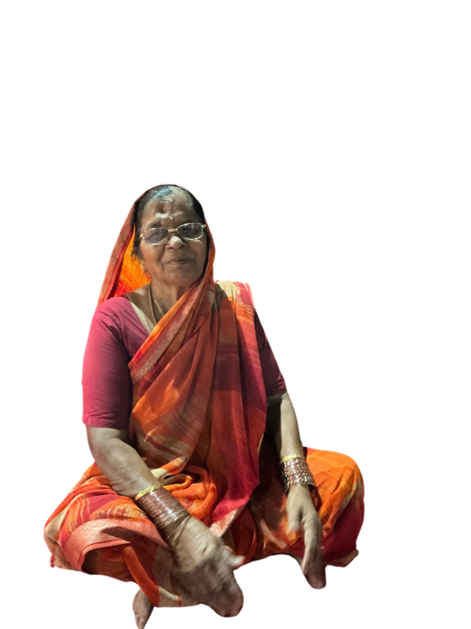
The devoted pilgrim
Mai Aaji
An elderly woman from Alandi who has walked the Wari every year for the past 30 years. For her, the Wari is not just a pilgrimage but a way of life, a yearly promise she makes to Vitthal, rain or shine.
PlaygroundWari Pandharichi
A visual storytelling project about the Warkari movement and the annual Pandharpur Wari, a 700+ year-old pilgrimage where lakhs of devotees walk to honor Lord Vitthal.
As someone deeply moved by cultural storytelling, I was fascinated by the Warkari tradition: how devotion, simplicity and unity come alive through the act of walking.
This project let me explore a blend of faith, community and design that keeps cultural values alive in a visual way.
Visit to Alandi

The devoted pilgrim
An elderly woman from Alandi who has walked the Wari every year for the past 30 years. For her, the Wari is not just a pilgrimage but a way of life, a yearly promise she makes to Vitthal, rain or shine.
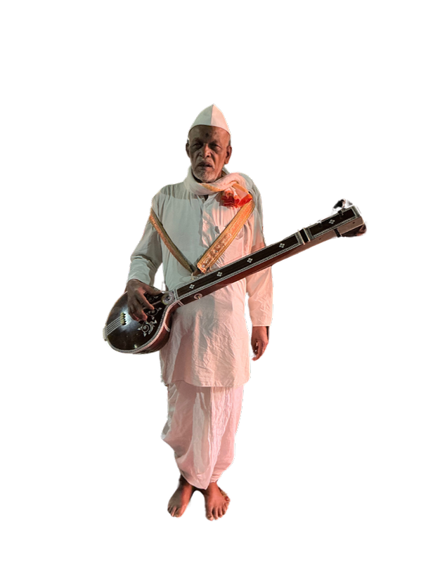
The mrudung wadak
A mrudung player whose life revolves around the Wari and Alandi. From a young age he has played in the palkhi procession, believing every beat connects him to Vitthal. For him, music, Alandi and the Wari are one and the same.
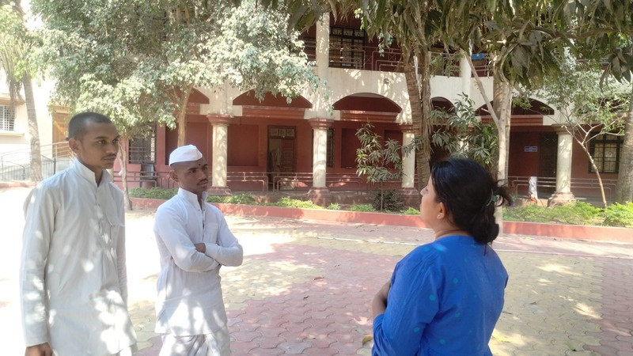
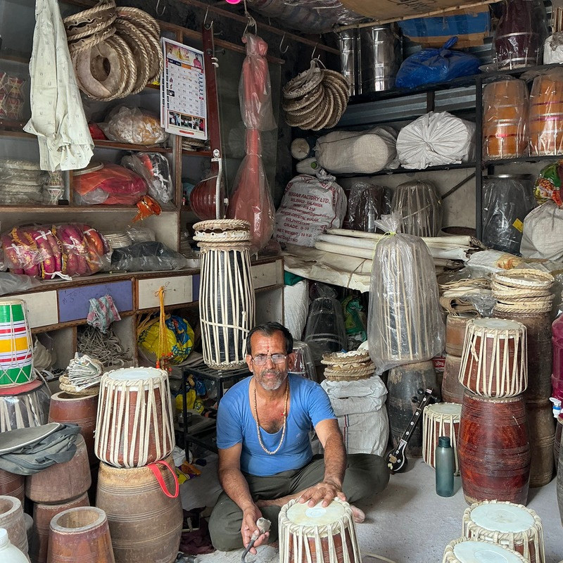
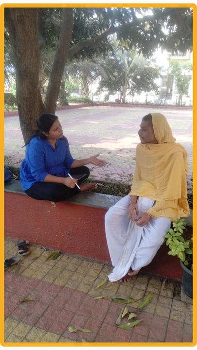
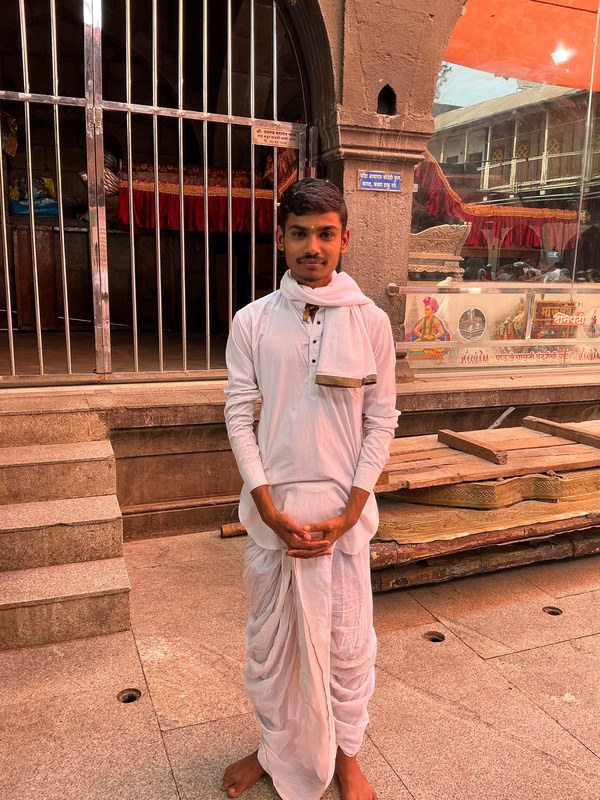
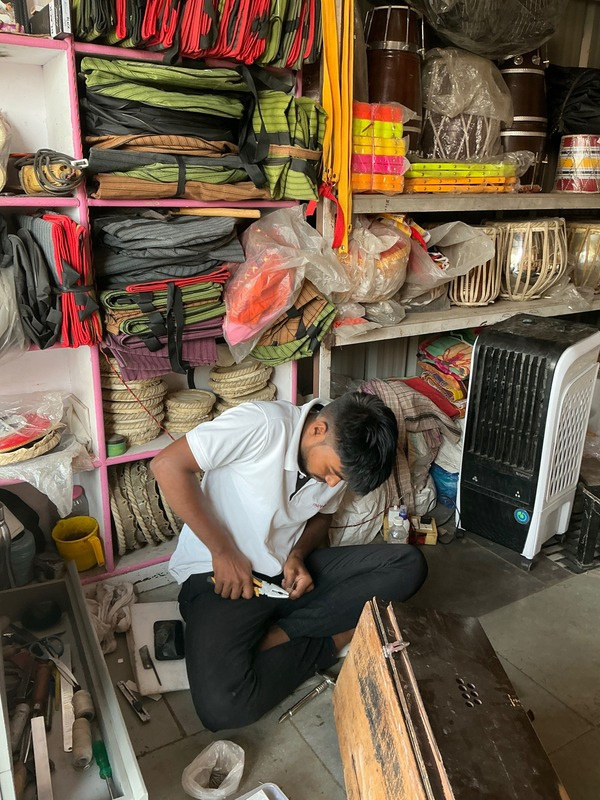
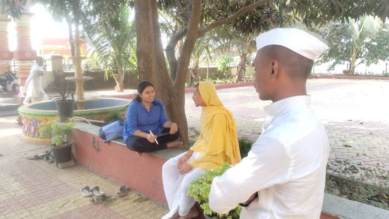
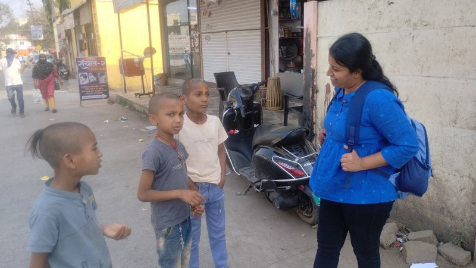
Drag or scroll sideways for more
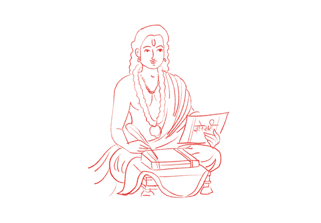
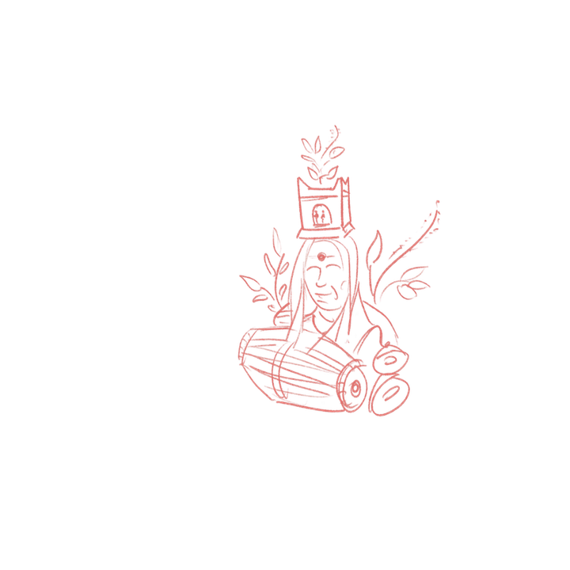
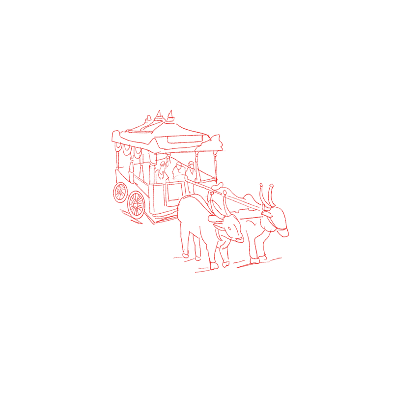
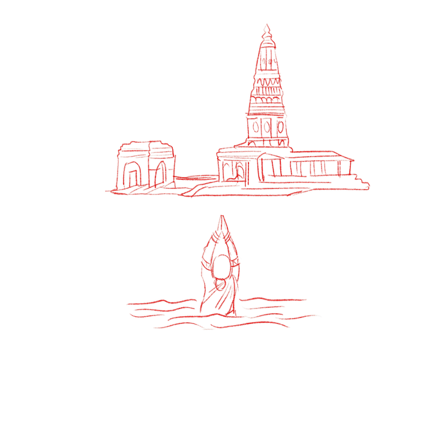
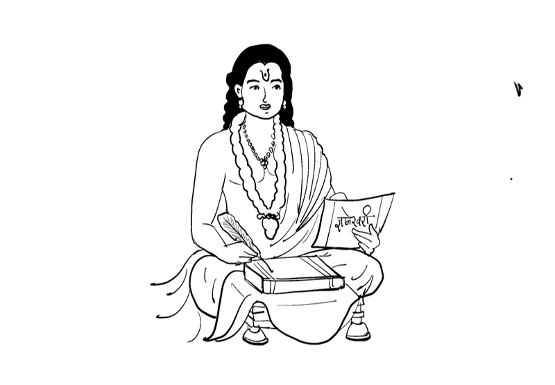
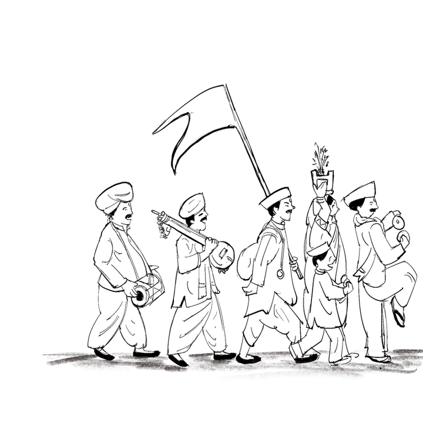
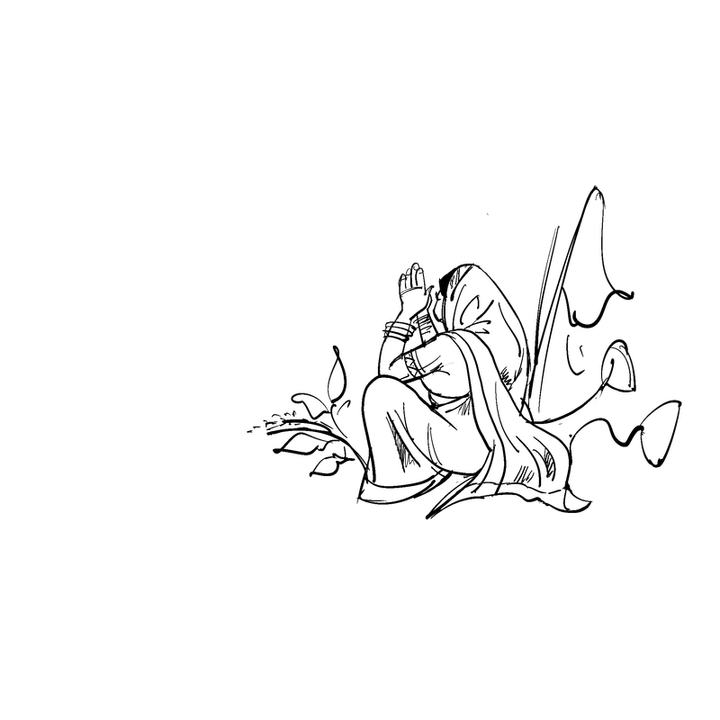
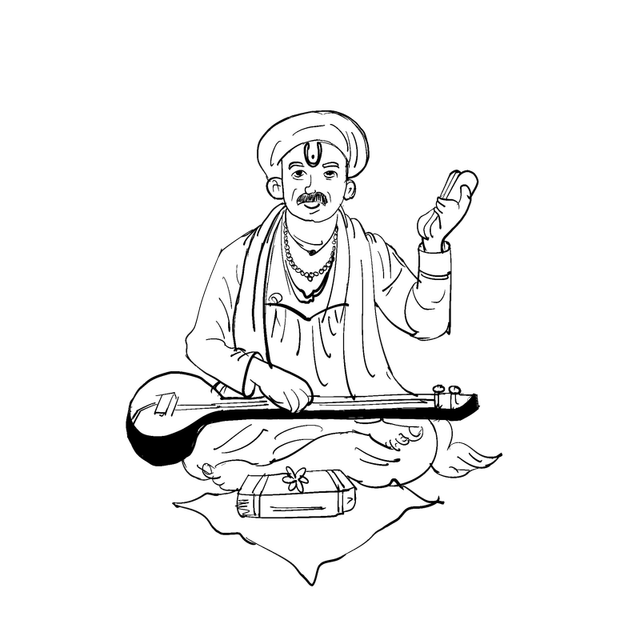
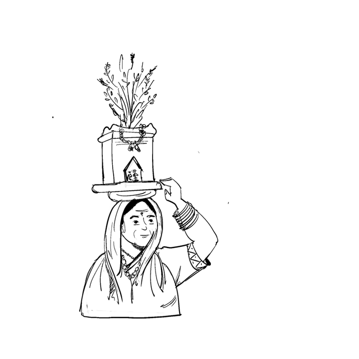
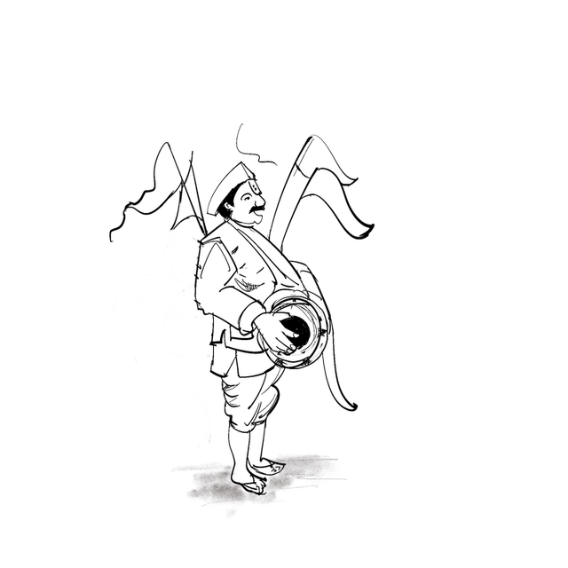
Click a color to copy it
The color palette is inspired by the tika Warkaris put on their forehead (black abir, sandalwood that dries yellowish, white abir) and by the orange flag in the Wari.
Jaini Aa
HeadingsLato Aa
Body textAms Aditya
Marathi textWari side: Journey of Faith
Next fun project
Tithi
An AR-enabled Marathi panchang desk calendar
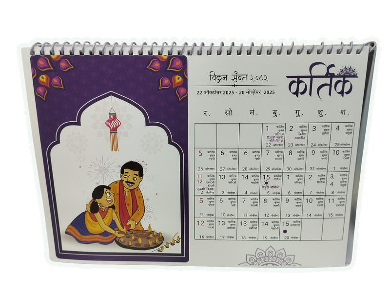